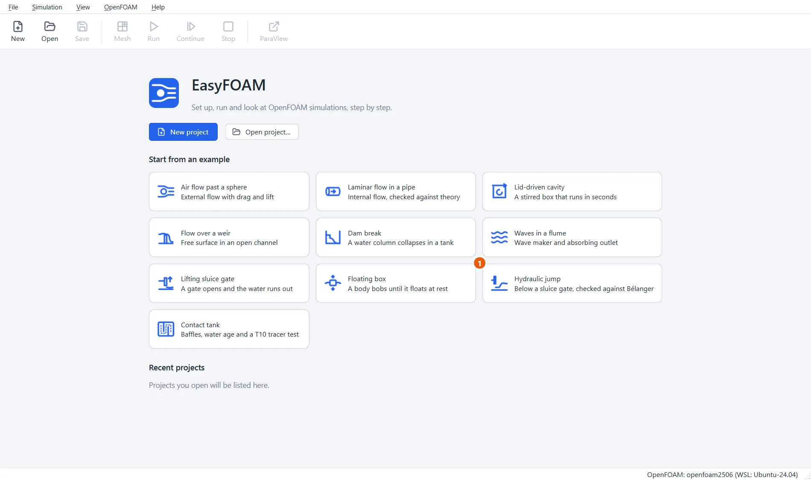
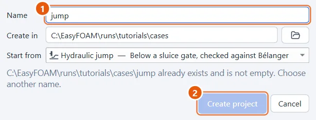
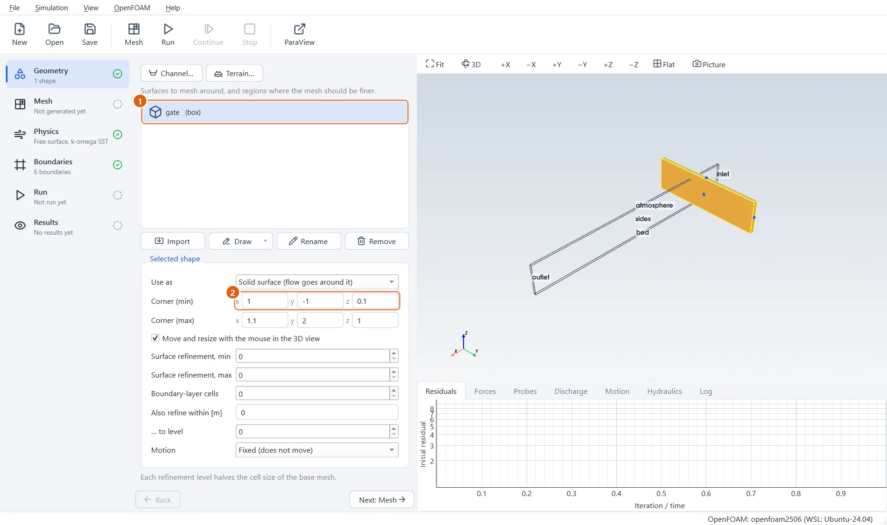
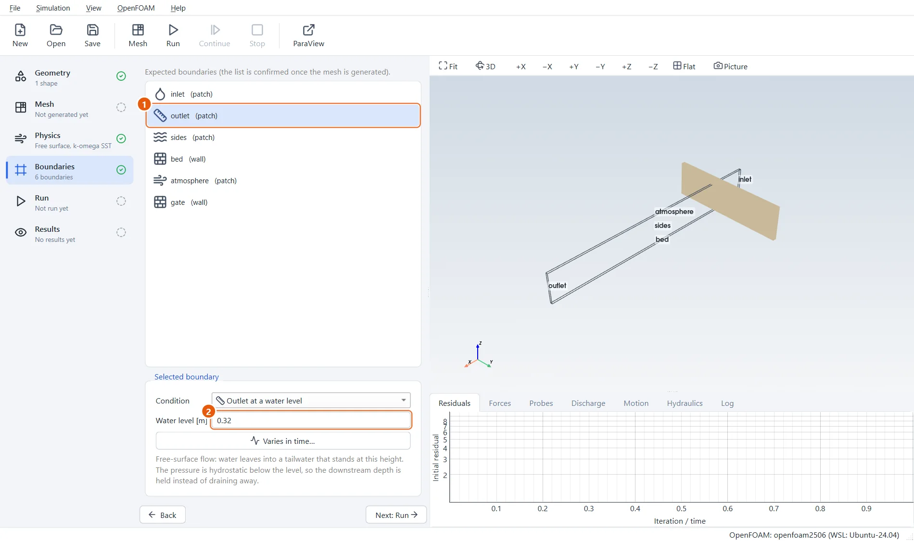
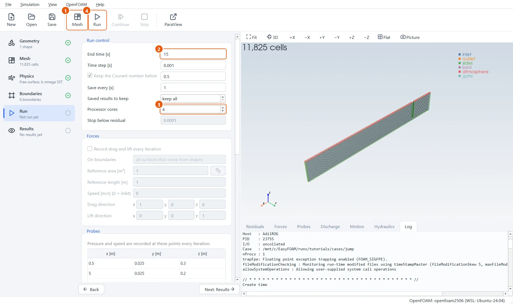
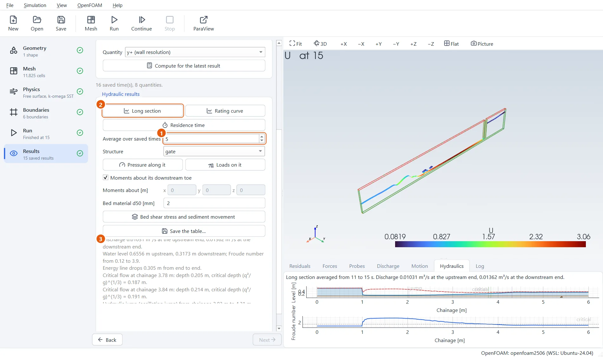
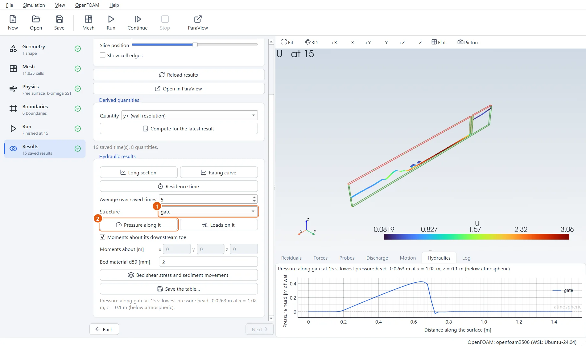
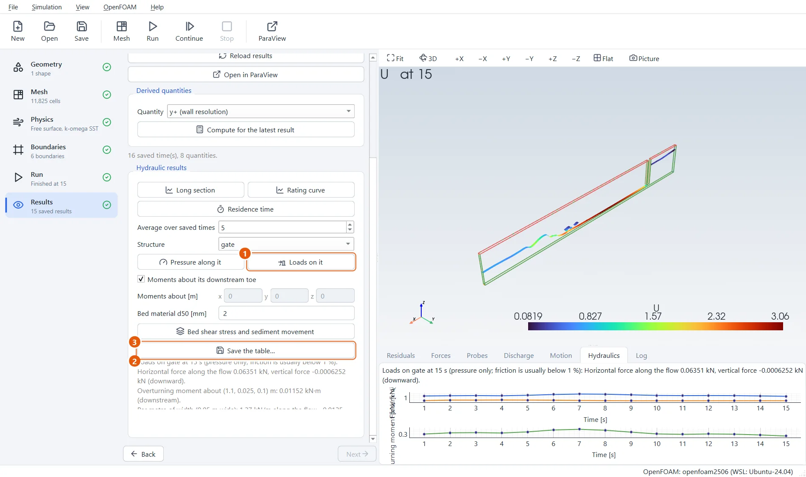

Tutorial 12 of 17
Hydraulic jump: long section and loads
Water shoots under a sluice gate and jumps back up. Find the jump, check it against Bélanger and work out the force on the gate.
Below a sluice gate the water leaves in a fast, shallow jet. Downstream, the tailwater is deep and slow. Where the two meet, the jet jumps up in a turbulent roller: a hydraulic jump, which destroys a large part of the jet's energy. Its height follows from the momentum balance (Bélanger's equation).
In this tutorial you run the jump example, draw its long section, let EasyFOAM find the jump and compare it with Bélanger, then read off the pressure on the gate and the force that pushes on it.
What you will learn
- draw a long section: water level, energy line and Froude number along a channel
- average an oscillating flow over several saved times
- find a hydraulic jump and compare its sequent depth and energy loss with theory
- work out the pressure on a structure and the force and moment it carries
Computer time: about ten minutes on four cores.
1Open the example
Start EasyFOAM. This case is one of the examples on the start page: it comes with every setting filled in, and this tutorial walks through each of them so that you understand the case and could build it yourself.
- Click Hydraulic jump.


2Name the project
The project is an ordinary folder that EasyFOAM creates for you.
- Type a name, for example
jump. - Click Create project.


3The gate
The channel is a thin slice, 6 m long and 0.8 m high, of a wide channel. The gate is a box from the top of the channel down to 0.1 m above the bed: the opening the water shoots through.
- The shape gate.
- Corner (min):
1,-1,0.1. The last number is the gate opening.


4Discharge and tailwater
The inlet lets in 0.0103 m³/s through the 5 cm slice, which is 0.206 m³/s per metre width. The outlet holds the tailwater at 0.32 m: that is what pushes the jump back towards the gate.
- The boundary outlet.
- Tailwater level:
0.32m.


5Mesh and run
Make the mesh, then run. Fifteen seconds of simulated time are enough for the jump to form and settle in front of the gate.
- Click Mesh in the toolbar (or press F5).
- End time:
15s. - Processor cores:
4. - Click Run in the toolbar (or press F6).


6The long section
When the run has finished, go to Results and press Long section. EasyFOAM integrates the water across the channel at stations along it and draws the bed, the water surface and the energy line, with the Froude number below. A jump oscillates, so average over the last 5 saved times.
The text lists the jump it found: the depth and Froude number of the jet before it, the depth after it, and both next to Bélanger's values. On this coarse mesh they agree within about 5 to 10 %; averaging over a longer run brings them closer.
- Average over:
5saved times. - Press Long section.
- The jump: its sequent depth and energy loss next to Bélanger's (within about 5 to 10 %).


7Pressure on the gate
Pick the gate under Structure and press Pressure along it. The plot shows the pressure head down the upstream face of the gate: zero in the air at the top, rising with depth in the reservoir.
- Structure:
gate. - Press Pressure along it.


8The force on the gate
Loads adds up the pressure over the gate: the force on it, per metre width as the gate spans the channel, and the overturning moment about its downstream toe. For this flow the momentum balance between the reservoir and the jet gives about 1290 N per metre; EasyFOAM finds about 1230.
- Press Loads.
- Force and moment, in total and per metre width.
- Save table… writes the numbers to a CSV file.

